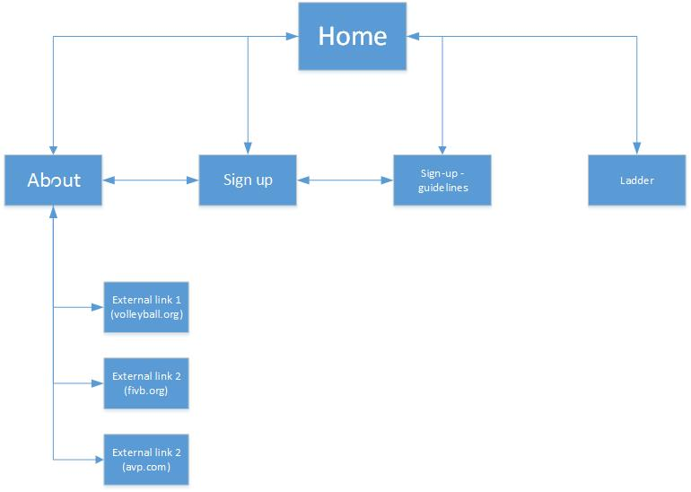

Megan Godwin – jc260801
To create a website that will boost this volleyball club’s business. This can be achieved through sign-up call to actions and promotions of clubs events and perks (e.g. happy hour.)
A boost in sign-ups and revenue are indicative factors of the sites success. A tally of sign-ups before sites publishing and after would determine the sites success.
Adults 30-50. While the client wants to attract more young players as well it is still typically the parents making the decisions. Typically, I don’t believe it’s the children that will go searching the internet specifically to look for family activities. Advertising within schools and school spaces will be more effective in that regard. The site will be easy to use and provide plenty of information for families interested in signing up.
